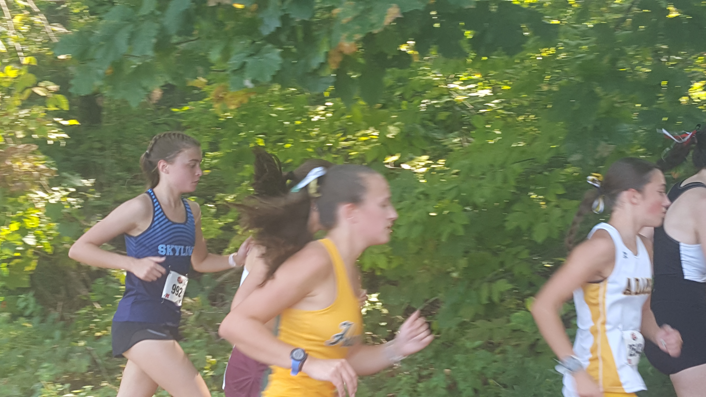
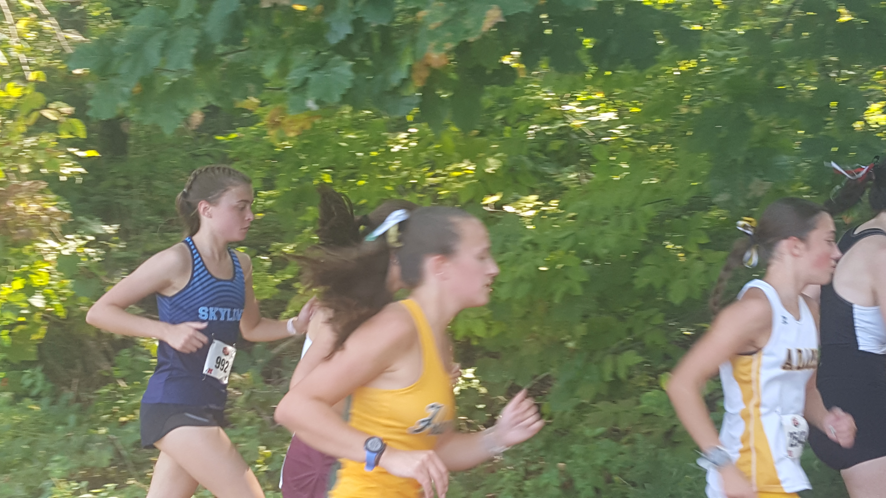

Race Summary
The Skyline boys cross country team hit the ground running—literally—at the SEC-HS Jamboree #2, taking on some tough competition at Pioneer High School. With a 4th-place finish out of 8 teams, Skyline's runners proved once again that they can hold their own in the fiercely competitive SEC Red division.
Leading the charge for Skyline was Nicholas Yuan, who dashed through the course with a time of 17:20.70, setting the tone for the rest of the team. Not far behind, Bruno Cifaldi finished with a solid 17:32.20, followed closely by Matthew Guikema at 17:39.10.
Oskar MacArthur also made his mark, crossing the finish line in 17:39.40. Wrapping up the top five for Skyline was Jack Robichaud at 17:46.60, proving Skyline's strength in depth.
Team Results
| Place | Team | Score |
|---|---|---|
| 1 | Saline | 60 |
| 2 | Ann Arbor Pioneer | 77 |
| 3 | Dexter | 101 |
| 4 | Ann Arbor Skyline | 103 |
| 5 | Temperance Bedford | 136 |
| 6 | Monroe | 166 |
| 7 | Ann Arbor Huron | 246 |
Individual Results

Athlete Stats
Place: 15.
Time: 17:20.70
Grade: 10

Athlete Stats
Place: 19.
Time: 17:32.20
Grade: 11

Athlete Stats
Place: 21.
Time: 17:39.10
Grade: 10

Athlete Stats
Place: 22.
Time: 17:39.40
Grade: 9

Athlete Stats
Place: 24.
Time: 17:46.60
Grade: 12

Athlete Stats
Place: 32.
Time: 18:07.80
Grade: 9

Athlete Stats
Place: 40.
Time: 18:20.60
Grade: 11

Athlete Stats
Place: 42.
Time: 18:29.50
Grade: 10

Athlete Stats
Place: 44.
Time: 18:33.30
Grade: 10
Gallery
View Gallery


 
